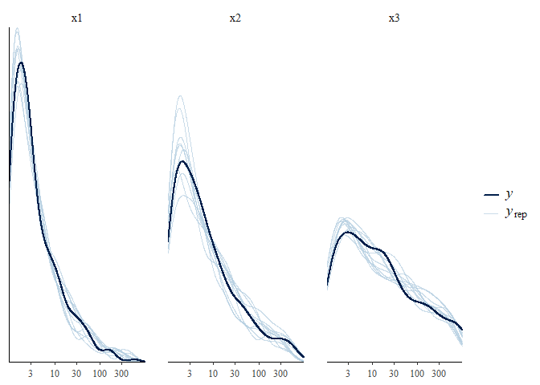

Overview
This package allows the estimation of power law exponents using the truncated (upper and lower) Pareto distribution (Wesner et al. 2024). Specifically, it allows users to fit Bayesian (non)-linear hierarchical models with a truncated Pareto likelihood using brms (Bürkner 2017). The motivation for the package was to estimate power law exponents of ecological size spectra using individual-level body size data in a generalized mixed model framework. The likelihood for the truncated Pareto used here was described in (Edwards et al. 2020). This package translates that likelihood into brms.
Installation
This package requires installation of brms and rstan, which itself requires installation of a C++ toolchain.
Go to https://mc-stan.org/users/interfaces/rstan.html and follow the instructions to install
rstanand configure the C++ toolchain.Install the latest version of
brmswith install.packages(“brms”).Install
isdbayesfrom github usingdevtools:
# requires an installation of devtools
devtools::install_github("jswesner/isdbayes")Examples
# load these packages
library(dplyr)
library(tidyr)
library(here)
library(ggplot2)
library(tidybayes)
library(brms)
library(isdbayes)Fit individual samples
First, simulate some power law data using rparetocounts(). The code below simulates 300 body sizes from a power law with exponent lambda = -1.2, xmin = 1, and xmax = 1000.
# simulate data
dat = tibble(x = rparetocounts(n = 300, lambda = -1.2, xmin = 1, xmax = 1000)) |>
mutate(xmin = min(x),
xmax = max(x),
counts = 1)The code above simulates data from a doubly-truncated Pareto and then estimates xmin and xmax. It also adds a column for counts. If the data all represent unique individual masses, then this column takes a value of 1 for every body size. If the data have repeated sizes, then this column can take an integer or double of the counts or densities of those sizes. For example, data that are x = {1.9, 1.9, 1.8, 2.8, 2.8} could either be analyzed with each body size assumed to be unique where counts = {1, 1, 1, 1, 1} or it could be analyzed as x = {1.9, 1.8, 2.8} and counts = {2, 1, 2}. The latter is a common format when there is a density estimate associated with counts or a sampling effort.
Next estimate the power law exponent using brms. The model below (fit1) is an intercept only model, where x are the body sizes and counts, xmin, and xmax are included in vreal(). The use of vreal has nothing to do with the model per se. It is simply required wording from brms when including custom families. Similarly, stanvars is required wording that contains the custom likelihood parameters. As long as isdbayes is loaded, then stanvars = stanvars will work. It will stay the same regardless of changes to the model structure (like new predictors or varying intercepts).
fit1 = brm(x | vreal(counts, xmin, xmax) ~ 1,
data = dat,
stanvars = stanvars, # required for truncated Pareto
family = paretocounts(),# required for truncated Pareto
chains = 1, iter = 1000)This example fits an intercept-only model to estimate the power-law exponent. For more complex examples with fixed and hierarchical predictors, see below.
Simulate multiple size distributions
x1 = rparetocounts(lambda = -1.8) # `lambda` is required wording from brms. in this case it means the lambda exponent of the ISD
x2 = rparetocounts(lambda = -1.5)
x3 = rparetocounts(lambda = -1.2)
isd_data = tibble(x1 = x1,
x2 = x2,
x3 = x3) |>
pivot_longer(cols = everything(), names_to = "group", values_to = "x") |>
group_by(group) |>
mutate(xmin = min(x),
xmax = max(x)) |>
group_by(group, x) |>
add_count(name = "counts")Fit multiple size distributions with a fixed factor
fit2 = brm(x | vreal(counts, xmin, xmax) ~ group,
data = isd_data,
stanvars = stanvars,
family = paretocounts(),
chains = 1, iter = 1000)Plot group posteriors
posts_group = fit2$data |>
distinct(group, xmin, xmax) |>
mutate(counts = 1) |>
add_epred_draws(fit2, re_formula = NA)
posts_group |>
ggplot(aes(x = group, y = .epred)) +
stat_halfeye(scale = 0.2) +
geom_hline(yintercept = c(-1.8, -1.5, -1.2)) # known lambdas
Fit multiple size distributions with a varying intercept
fit3 = brm(x | vreal(counts, xmin, xmax) ~ (1|group),
data = isd_data,
stanvars = stanvars,
family = paretocounts(),
chains = 1, iter = 1000)Plot varying intercepts
posts_varint = fit3$data |>
distinct(group, xmin, xmax) |>
mutate(counts = 1) |>
add_epred_draws(fit3, re_formula = NULL)
posts_varint |>
ggplot(aes(x = group, y = .epred)) +
stat_halfeye(scale = 0.2) +
geom_hline(yintercept = c(-1.8, -1.5, -1.2)) # known lambdas
Posterior predictive checks
After the model is fit, you can use built-in functions in brms to perform model checking.
pp_check(fit2)
#> Using 10 posterior draws for ppc type 'dens_overlay' by default.
pp_check(fit2, type = "dens_overlay_grouped", group = "group") +
scale_x_log10()
#> Using 10 posterior draws for ppc type 'dens_overlay_grouped' by default.
#> Warning in transformation$transform(x): NaNs produced
#> Warning in transformation$transform(x): NaNs produced
#> Warning: Removed 6 rows containing missing values or values outside the scale range
#> (`geom_segment()`).
Visualize ISD
This code extracts the cumulative probabilities using pparetocounts() and the plots them over raw data. Note that the raw data probabilities are simply estimates for visualization purposes. These plots are typical in studies of the ISD and are visually similar to plots of log-abundance vs log-size, making them more familiar to readers (maybe).
# 1) sort raw data
d = fit1$data |>
arrange(-x) |>
mutate(order = row_number(),
y_raw_prob = order/max(order)) # convert to 0-1 scale
# 2) data grid to sample over
data_grid = d %>%
distinct(xmin, xmax) %>%
expand_grid(x = 2^seq(log2(min(d$x)), log2(max(d$x)), length.out = 30)) |> # sequence is log 2 to ensure equal logarithmic spacing
mutate(counts = 1) # This is a default. Even if counts are >1 inthe raw data, make them = 1 here.
# 3) extract posteriors
isd_posts = data_grid |>
tidybayes::add_epred_draws(fit1)
# 4) get cumulative probabilities from posteriors
isd_lines = isd_posts |>
mutate(y_prob = pparetocounts(x = x, xmin = xmin ,xmax = xmax, lambda = .epred))
# 5) plot raw vs posterior samples
isd_lines |>
filter(.draw <= 100) |> # limits to the first 100 draws. Change as needed or use a summary to plot instead of individual lines
ggplot(aes(x = x, y = y_prob)) +
geom_line(aes(group = .draw), alpha = 0.3) +
geom_point(data = d, aes(y = y_raw_prob),
shape = 21, fill = "white", color = "black") +
labs(y = "P(X >= x)")